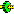

Using the Adroit Configuration Setup:
Press the Windows  key and start typing in Classic Setup and select it from the list.
key and start typing in Classic Setup and select it from the list.
Click on the Drivers tab and right click in the Installed Drivers and Devices list.
If the Monitor Local Agent Server option is enabled, a tick () appears next to it, in which case the local Agent Server will be looked for every 5 seconds until it is found.
Once the Agent Server is detected, both the device icons ( ,
,

,Note: It is only possible to stop or start running devices via the Agent Configurator, alternatively use the Project Explorer.
Using the Adroit Config Editor:
This functionality is currently not provided.